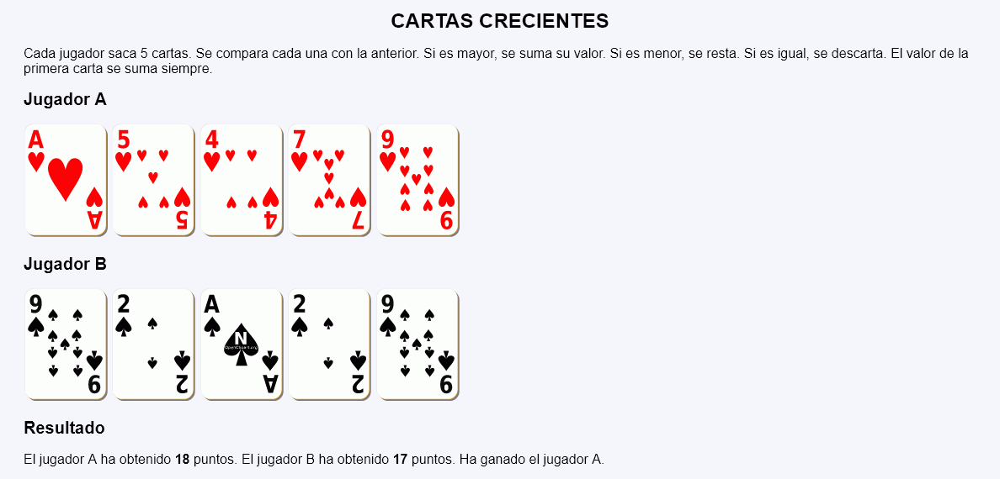
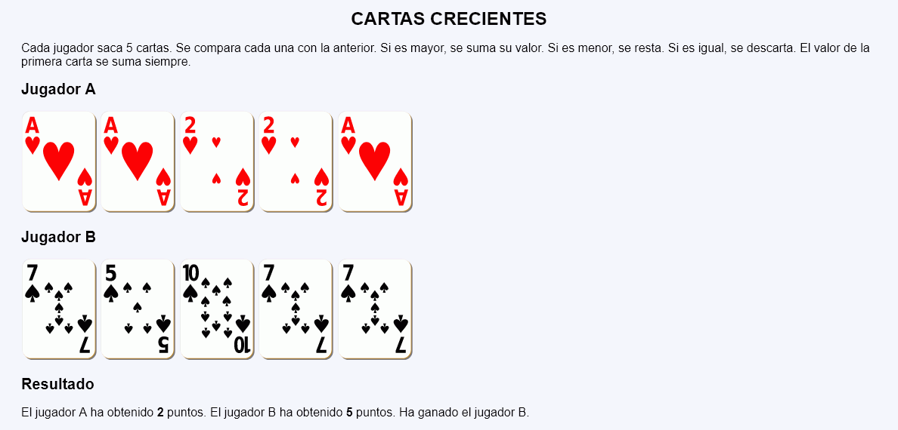
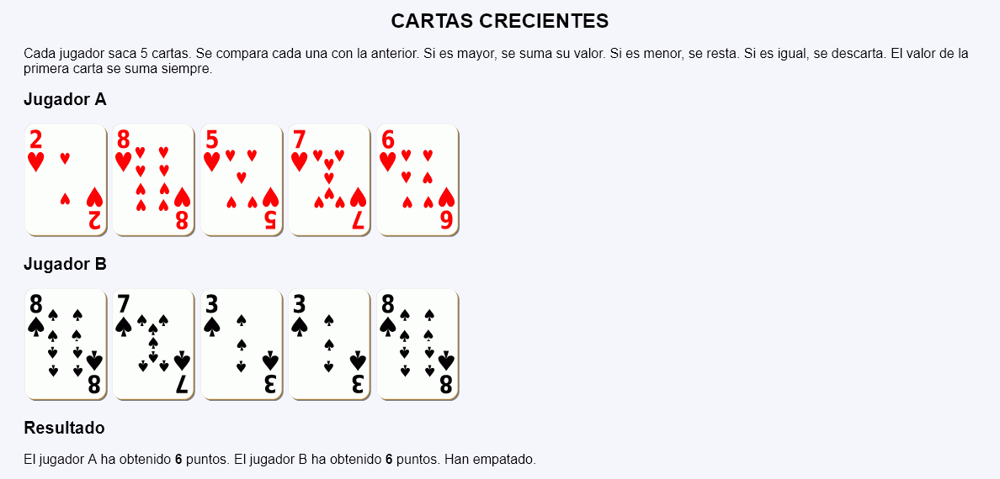

Cartas crecientes - Ejemplo de programa
Nota: El día del examen los alumnos no tienen acceso a este ejemplo, solamente tienen acceso a las capturas del apartado anterior.
Un ejemplo de programa puede probarse en la ventana siguiente:
En este ejercicio se debe crear un programa que muestre una partida del juego "Cartas crecientes".



<h2>Jugador A</h2>
<p>
<img src="img/c5.svg" alt="5 de corazones" width="100">
<img src="img/c9.svg" alt="9 de corazones" width="100">
<img src="img/c4.svg" alt="4 de corazones" width="100">
<img src="img/c3.svg" alt="3 de corazones" width="100">
<img src="img/c9.svg" alt="9 de corazones" width="100">
</p>
<h2>Jugador B</h2>
<p>
<img src="img/p5.svg" alt="5 de picas" width="100">
<img src="img/p5.svg" alt="5 de picas" width="100">
<img src="img/p8.svg" alt="8 de picas" width="100">
<img src="img/p9.svg" alt="9 de picas" width="100">
<img src="img/p10.svg" alt="10 de picas" width="100">
</p>
<h2>Resultado</h2>
<p>El jugador A ha obtenido 16 puntos. El jugador B ha obtenido 32 puntos. Ha ganado el jugador B.</p>
Nota: El día del examen los alumnos no tienen acceso a este ejemplo, solamente tienen acceso a las capturas del apartado anterior.
Un ejemplo de programa puede probarse en la ventana siguiente: